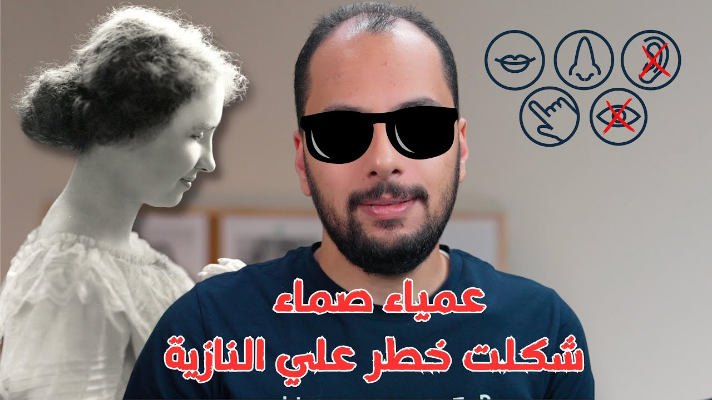

سير ذاتية
هيلين كيلر كيف تحولت من طفلة عمياء صماء لأهم شخصيات القرن ١٩؟ معادلة المعجزة
طفلة فقدت السمع والبصر وهي عندها حوالي 19 شهر، وفضلت سنين من غير أي وسيلة تتواصل بيها مع اللي حواليها. إزاي Helen Keller خرجت من السجن ده بمساعدة Anne Sullivan، وإيه المعادلة اللي ورا المعجزة دي؟

شغّل الحلقةتخيل معايا كده لو إنت طفل صغير ومحبوس لوحدك في مكان مظلم معتم، ومن كتر ضلامه مش قادر تشوف حتى إيديك. والمكان ده صامت لدرجة إنك مش بتسمع فيه دبة النملة، ولأنك طفل لسه ما اتعلمتش الكلام، فمش قادر تكلم حتى نفسك. أعتقد مهما قعدت تشطح بخيالك، عمرك ما هتتخيل الحالة دي.
لكنها حصلت وبتحصل لبعض الأشخاص. مش بكلمك على ناس في غيبوبة؛ دول ناس فايقين وبيتحركوا زيهم زينا، لكنهم عايشين في ضلمة علشان مش بيشوفوا، وفي صمت رهيب علشان مش بيسمعوا، وفقدانهم للسمع والبصر بينتج عنه فقدان منطقي للنطق. مسجونين، ومش أي سجن: سجن جوه نفسهم، شديد الحراسة، بيفصلهم عن العالم المحيط بيهم.
وبطلة الحكاية دي كانت من القليلين اللي قدروا يخرجوا من السجن ده ويكسروا قيوده، وتتواصل مش بس مع الناس اللي حواليها، لأ، دي قدرت تتواصل مع العالم كله. هكلمك النهارده عن الطفلة العمياء الصماء اللي قدرت تبقى واحدة من أهم شخصيات القرن العشرين،1 معجزة الإرادة وإحدى هبات المعاناة: Helen Keller.
ليه الأطفال بيتنمروا على شاب أعمى؟ 1:41
وأنا صغير كنت بسافر مع أهلي لقريتنا في الصعيد، وكل ما أسافر كنت بشوف مشهد بشع بيتكرر قدامي كل يوم تقريبًا: شاب فاقد للبصر وحافي القدمين، كل ما يمشي في الشارع بيتزف حرفيًا من الأطفال الصغيرين، بعبارات كلها إساءة وتنمر على حالته وإعاقته. الشاب ده ملوش أي ذنب في إنه اتولد أعمى، والمشهد كان صعب جدًا، لكن اللي كان أصعب بالنسبة لي هو تفسيره: إيه اللي يخلي أطفال يتنمروا على حد بالحالة دي بدل ما يساعدوه؟
السؤال ده فضل شاغلني كتير، لغاية ما قريت وأنا بحضّر الحكاية دي معلومة بتقول إن في زمان Helen Keller كانوا بيتعاملوا مع الأطفال اللي بيتولدوا بإعاقة زي العمى على إنها نتيجة لخطيئة عملها الأب أو الأم، وكأن الأطفال دي ثمرة لإحدى المعاصي. ولما كملت في البحث لقيت إن فيه ناس تانية بتؤمن بتناسخ الأرواح، وعندهم فكرة بتقول إن الأطفال اللي بيتولدوا بإعاقة كانوا أشرار في حياتهم اللي قبل كده، فاتعاقبوا بإنهم يتولدوا بالحالة دي.
متهيألي إن الأفكار دي هي اللي خلت الأطفال والمجتمع يتنمروا على الشاب فاقد البصر في قريتي، وهو نفس الفكر اللي خلى المجتمع في أوروبا وأمريكا زمان يتعامل مع Helen Keller واللي زيها على إنهم نكرة، ملهمش أي وجود، ومش من المحبب الكلام عنهم.
إزاي Helen Keller فقدت السمع والبصر؟ 2:48
في الأجواء دي اتولدت الطفلة Helen سنة 1880. وبالمناسبة، هي اتولدت طفلة طبيعية خالص، لكنها فقدت السمع والبصر بعد مرض جالها وهي عندها حوالي 19 شهر.2
أهلها حاولوا يساعدوها على قد ما يقدروا: كانوا دايمًا بيدعموها وبيدوروا على حلول لمعاناتها، لكنهم للأسف كانوا بيفشلوا كل مرة في خلق أي تواصل بينهم وبينها. ففضلت Helen أول 6 سنين من عمرها مش فاهمة اللي حواليها، ولا اللي حواليها فاهمينها، عايشة جوه السجن اللي حكيت لك عليه. لحد ما وصلوا لمدرسة تيجي لها البيت وتحاول معاها، والمرشحة كانت بنت عندها 20 سنة، لسه متخرجة من مدرسة Perkins للمكفوفين.23
مين هي Anne Sullivan؟ 3:29
البنت دي اسمها Anne Sullivan، وكان وراها حكاية خلتها فعلًا المرشحة الأفضل لمساعدة Helen. Anne اتولدت في أمريكا، لكن أسرتها كانوا مهاجرين هربانين من أيرلندا بسبب المجاعة اللي اتعرفت بمجاعة البطاطس. وهروب الأسرة من المجاعة ما منعش عنهم المعاناة.
وهي عندها 5 سنين اتصابت بالرمد الحبيبي، ونتج عنه إنها بقت شبه عمياء. وبعدها بـ3 سنين أمها اتصابت بالسل وماتت.4 صدمة كبيرة لطفلة، لكنها ولا حاجة جنب الصدمة الأكبر: أبوها قرر يسيبها هي وأخوها الصغير ويمشي، والمأساة كملت لما أخوها مات بعد كام شهر بسبب السل، وفضلت Anne في دار رعاية لوحدها.
بعدها بدأت رحلة علاج طويلة، فيها عمليات كتير فاشلة في عينيها، لحد ما عمليات بعدها حسّنت نظرها.5 يعني Anne، جنب معاناة فقدان أسرتها، قعدت طفولتها ومراهقتها فاقدة للبصر. وأعتقد ده اللي خلاها تحس بمعاناة Helen، وتفهم احتياجاتها، وتعرف تتعامل معاها إزاي.
إيه الإعاقة الحقيقية اللي واجهتها Anne؟ 4:29
أول تحدي كان قدام Anne ما كانش إعاقة Helen؛ بالعكس، كان طريقة تعامل أسرتها معاها. كانوا بيعاملوها على إنها معاقة، فتعمل اللي هي عاوزاه: تكسر في البيت، أو تكون عنيفة، وكل ده مش مهم. والدلع ده خلى Helen إنسانة عنيدة، بتتمرغ في الأرض لو ما عملوش اللي هي عاوزاه، وده كان بيحصل على طول، لأنهم مش فاهمينها أصلًا، ولا هي فاهماهم.
والحكاية المشهورة بتقول إن Anne قالت لأسرة Helen: إنتوا الإعاقة الحقيقية، ولو عاوزينها تبقى إنسانة طبيعية، يبقى تتعاملوا معاها على إنها طبيعية. الجملة دي بالنص ما لقيتهاش في المصادر، لكن اللي ثابت في جوابات Anne نفسها إنها كتبت إنها مش هتقدر تعمل حاجة مع Helen وسط العيلة اللي طول عمرها سايباها تعمل اللي هي عاوزاه. فاتفقت مع الأسرة إنها تاخدها وتعيش معاها في بيت صغير في الجنينة بعيد عن البيت الكبير،3 علشان تقعد معاها لوحدها من غير أي دلع.
إزاي Anne دخّلت الكلام لعقل Helen؟ 5:09
التحدي التاني: إزاي تدخّل المعلومات جوه عقل Helen؟ الموضوع بصراحة كان أقرب للمستحيل. تخيل لابتوب من غير ماوس ولا كيبورد: هتديله الأوامر إزاي؟ مستحيل، لأنه مش هيفهم إنت عاوز إيه أصلًا. Helen كانت نفس الفكرة تقريبًا: فاقدة حاستين مهمين، البصر والسمع، ودول بمثابة الماوس والكيبورد بالنسبة لعقلها، وليهم تأثير مباشر على النطق.
لو كانت فاقدة البصر بس، كانت هتقدر بسهولة تسمع اسم الحرف وتربطه باللمس بطريقة Braille. ولو كانت فاقدة السمع بس، كانت هتستخدم بصرها وتربط الكلمات بالصور وتتعلم تقرا. لكن Anne Sullivan اتغلبت على التحدي ده بفكرة عبقرية: استخدمت حاسة اللمس والشم عند Helen عشان يكونوا بمثابة عينيها وودانها.
بدأت تخليها تربط الحاجات اللي بتلمسها وتشمها بإشارات معينة: تخليها تلمس المية بإيديها، وبعدها ترسم لها على إيدها الحروف اللي بتعبر عن المية. تخليها تلمس الورد وتشمه، وتكتب لها إشارته على إيديها. وبالشكل ده قدرت Helen تتواصل مع كل اللي حواليها بلغة الإشارة اللمسية.
إيه الإنجازات اللي حققتها Helen بعد كده؟ 6:25
التطور ده في حد ذاته كان بمثابة المعجزة لأهل Helen، وكانوا مكتفيين بيه بصراحة. لكن بالنسبة لـAnne، ده كان بداية مشوار طويل مليان بمعجزات أكبر بكتير. فأقنعت الأسرة إنها تكمل معاها، وتدخّلها مدرسة Perkins للمكفوفين، وتبدأ تتعلم القراية بطريقة Braille.
وبعدها الإنجازات بدأت تتحقق ورا بعض: Helen Keller خدت أول بكالوريوس في الآداب لكفيف أصم سنة 1904،2 واتعلمت 5 لغات.3 معجزة، صح؟ بس المعجزة الأكبر لسه جاية.
إزاي Helen Keller اتعلمت تتكلم؟ 6:52
في الحلقة بعرض فيديو لـHelen Keller وهي بتتكلم. ودي بقى المعجزة الكبيرة اللي عملتها، حاجة بصراحة مش بس صعبة، دي كانت تبان مستحيلة. وأنا نفسي خدت وقت على ما فهمت هي قدرت تستعيد النطق إزاي.
الفكرة كانت ببساطة إنها تعمل محاكاة لحركة الحنجرة: Helen كانت بتحط إيديها على بق وحنجرة اللي بيعلّمها وهو بينطق الحرف، وتحاول تقلّد الحركة والاهتزازات اللي بتحسها، لحد ما تبتدي تنطق الحروف والكلمات صح.3 وطبعًا ده كان محتاج مجهود وتدريب جبار.
إزاي Helen بدأت تساعد غيرها؟ 7:45
Helen Keller قررت تخرج برا معاناتها وتحاول تساعد ناس تانية بتعاني من نفس المعاناة. وأول حاجة بدأت بيها كانت مقالات بتكتبها في مجلة Ladies' Home Journal عن الوقاية من العمى عند المواليد.6
والمجتمع ما كانش جاهز للكلام ده، فبدأوا يهاجموها هي وصديقها Edward Bok، رئيس تحرير المجلة وواحد من أكبر الداعمين ليها. لكن الهجوم ما وقّفهمش. وتأثير Helen Keller بدأ يزيد ويوصل لناس كتير، وبقت بتلف العالم كمتحدثة تحفيزية، بتحكي قصتها وتلهم الناس تعمل زيها.
ليه النازيين حرقوا كتب Helen Keller؟ 8:21
نشاطها الحقيقي ده ما كانش بيعجب ناس كتير. النازيين مثلًا حسوا بخطرها وحرقوا الكتب بتاعتها.78 وعلى الرغم من دعمها للجيش الأمريكي في الحرب العالمية الثانية، وزياراتها لمستشفيات الجيش لدعم الجرحى والمصابين،2 السلطات في أمريكا كانت شايفاها قريبة من جماعات متطرفة، وحطتها تحت المراقبة.9
وأنا بصراحة مش قادر أتخيل إيه الخطر اللي ممكن تشكله امرأة مش بتشوف ولا بتسمع على دولتين كبار زي أمريكا وألمانيا، في وقت كانت فيه المرأة مهمشة وأصحاب الإعاقة منبوذين. وأعتقد إن دي قوة المعجزة اللي عملتها Helen Keller بمساعدة Anne Sullivan.
إيه هي معادلة المعجزة؟ 8:59
لو حبينا نفهم إزاي Helen Keller قدرت تعمل كل ده، مش هنلاقي أفضل من معادلة المعجزة اللي شرحها Hal Elrod في كتابه، واللي بيقول فيها بكل بساطة واختصار:10
إيمان راسخ زائد جهد استثنائي بينتج عنهم معجزة
وأعتقد إن ده اللي عملته Anne Sullivan من البداية: كانت مؤمنة ومصدقة إنها هتقدر تساعد Helen Keller، والإيمان ده خلاها تبذل كل الجهد وتبتكر كل الطرق علشان تتواصل معاها وتعلّمها. وبعد ما نجحت، بقى عندهم هما الاتنين إيمان أقوى إنهم يعملوا معجزات أكتر، فبذلوا جهد استثنائي تاني وعملوا المعجزات اللي حكيت لك عنها.
المعادلة بسيطة، وفي رأيي نتايجها مضمونة، لكن طرق تطبيقها أكيد مش سهلة، ومحتاجة نتكلم عنها في حلقة لوحدها. وزي ما بقول دايمًا: اليوم أفضل من الأمس، وغدًا سيكون الأفضل.
فصول الحلقة
- 1:41 ليه الأطفال بيتنمروا على شاب أعمى؟
- 2:48 إزاي Helen Keller فقدت السمع والبصر؟
- 3:29 مين هي Anne Sullivan؟
- 4:29 إيه الإعاقة الحقيقية اللي واجهتها Anne؟
- 5:09 إزاي Anne دخّلت الكلام لعقل Helen؟
- 6:25 إيه الإنجازات اللي حققتها Helen بعد كده؟
- 6:52 إزاي Helen Keller اتعلمت تتكلم؟
- 7:45 إزاي Helen بدأت تساعد غيرها؟
- 8:21 ليه النازيين حرقوا كتب Helen Keller؟
- 8:59 إيه هي معادلة المعجزة؟
أسئلة شائعة
Helen Keller فقدت السمع والبصر إمتى؟
اتولدت طفلة طبيعية سنة 1880، وفقدت السمع والبصر بعد مرض وهي عندها حوالي 19 شهر. وفضلت أول 6 سنين من عمرها من غير أي تواصل حقيقي مع اللي حواليها.
مين هي Anne Sullivan؟
المدرسة اللي غيّرت حياة Helen Keller: بنت عندها 20 سنة، لسه متخرجة من مدرسة Perkins للمكفوفين. وهي نفسها اتصابت وهي عندها 5 سنين بالرمد الحبيبي اللي خلاها شبه عمياء، وأعتقد إن ده اللي خلاها تحس بمعاناة Helen.
إزاي Helen Keller اتعلمت تتكلم؟
كانت بتحط إيديها على بق وحنجرة اللي بيعلّمها وهو بينطق، وتحاول تقلّد الحركة والاهتزازات لحد ما تنطق الحروف والكلمات صح. والطريقة دي كانت محتاجة مجهود وتدريب جبار.
إيه هي معادلة المعجزة؟
بحسب Hal Elrod في كتابه: إيمان راسخ زائد جهد استثنائي بينتج عنهم معجزة.
تصحيحات
- قلت إن Helen Keller بقت واحدة من أهم شخصيات القرن التسعتاشر؛ الصحيح القرن العشرين: هي اتولدت سنة 1880 وعاشت لحد 1968، ومجلة Time اختارتها ضمن أهم 100 شخصية في القرن العشرين.1
- قلت إنها فقدت السمع والبصر بسبب الحمى القرمزية؛ الثابت إن المرض نفسه مش معروف بالظبط: الدكاترة وقتها سموه احتقان حاد في المعدة والمخ، والمرجّح إنه كان الحصبة الألمانية أو الحمى القرمزية.23
- قلت إن واحد من أصحاب العيلة اقترح يجيبوا لها مدرسة؛ اللي حكته Helen في كتابها The Story of My Life إن دكتور في Baltimore نصح أبوها يروح لـAlexander Graham Bell، وBell نصحه يكتب لمدير مدرسة Perkins في Boston، والمدير هو اللي لقى لهم Anne Sullivan، ووصلت لبيتهم يوم 3 مارس 1887.3
- قلت إن البصر رجع لـAnne Sullivan في العملية الأخيرة؛ الأدق إن العمليات اللي عملتها وهي في مدرسة Perkins حسّنت نظرها بشكل كبير.5
- قلت إن Anne هي اللي علّمت Helen النطق؛ أول دروس النطق كانت سنة 1890 مع Sarah Fuller، مديرة مدرسة Horace Mann للصم في Boston، وطريقتها إنها تخلي Helen تحط إيدها على وشها وتحس بمكان لسانها وشفايفها وهي بتنطق، وبعدها Anne فضلت تساعدها في التمرين على كل صوت.23
- قلت إن مقالاتها في Ladies' Home Journal كانت لتصحيح نظرة المجتمع للناس اللي بيتولدوا بإعاقة؛ المقال اللي فتحته منها، I Must Speak سنة 1909، كان عن الوقاية من العمى عند المواليد، وفيه بتقول إنها كتبت في نفس المجلة قبلها بسنة عن الوقاية من العمى.6
المصادر
- en.wikipedia.org https://en.wikipedia.org/wiki/Helen_Keller
- afb.org https://www.afb.org/about-afb/history/helen-keller/biography-and-chronology/biography
- gutenberg.org https://www.gutenberg.org/files/2397/2397-h/2397-h.htm
- en.wikipedia.org https://en.wikipedia.org/wiki/Anne_Sullivan
- sites.aph.org https://sites.aph.org/hall/inductees/macy/
- disabilitymuseum.org https://www.disabilitymuseum.org/dhm/lib/detail.html?id=2448
- encyclopedia.ushmm.org https://encyclopedia.ushmm.org/content/en/article/helen-keller
- afb.org https://afb.org/blog/entry/helen-kellers-words-80-years-later-still-powerful
- pbs.org https://www.pbs.org/wnet/americanmasters/pop-culture-and-the-enduring-legacy-of-helen-keller/19378/
- penguinrandomhouse.com https://www.penguinrandomhouse.com/books/600801/the-miracle-equation-by-hal-elrod/